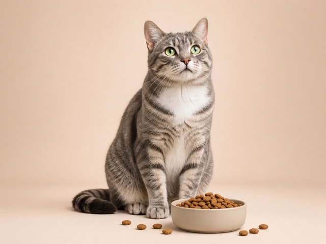

Dr. Shantanu Kalambi
Feline Internal Medicine
20 years

A Felica vet will call you. Please keep your phone close.
Sniffs the food, then walks away
Will only eat one flavour or brand
Skips meals, but still asks for treats
How the callback works
Two fields. No account and no card.
We usually call within 15 to 30 minutes during working hours.
Advice on the call. If your cat needs a clinic visit, the vet will say so.
Felica vets
Feline Internal Medicine
20 years

Feline Internal Medicine
8 years
No. Leave your cat's name and your number. No account and no card needed.
The vet talks through picky eating, feeding routines, and behaviour. They share advice and next steps. This is guidance, not a diagnosis or a treatment plan for illness.
A feline vet usually calls within 15 to 30 minutes during working hours.
Never. Emergencies, bloodwork, and any hands-on care belong in a clinic. If your cat needs to be seen in person, the vet will tell you.
If your cat has not eaten for 24 hours or more, or seems unwell, contact a vet straight away. Do not wait for this callback.
Leave a name and number. A feline vet will call you to talk it through.